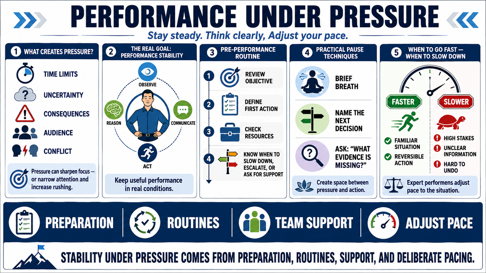

Pressure, Stress, and Performance Stability
Connecting to LMS... Progress: in progress

Narration
Performance under pressure is different from performance in calm conditions. Pressure may come from time limits, uncertainty, consequence, audience, conflict, or the knowledge that a decision matters. At a general level, pressure can sharpen focus for some tasks, but it can also narrow attention, increase rushing, and reduce decision quality if it is not managed.
The goal is not to eliminate every sign of pressure. Real work often contains pressure. The goal is performance stability: the ability to keep observing, reasoning, communicating, and acting in a useful way. Simple pre-performance routines can help. A performer may review the objective, define the first action, check required resources, and decide in advance when to slow down, escalate, or ask for support.
Practical pause techniques can also help at a non-clinical level. Taking a brief breath, naming the next decision, or asking what evidence is missing can interrupt panic and tunnel vision. These techniques are not medical treatment. They are ordinary performance habits that create a small space between pressure and action, especially when the urge is to rush.
Expert performers know when speed is useful and when slowing down is safer. If the situation is familiar and the action is reversible, speed may be appropriate. If the stakes are high, the information is unclear, or the action is hard to undo, a deliberate pause can improve quality. Stability under pressure comes from preparation, routines, team support, and the willingness to adjust pace when the situation demands it.